| 1: | Solve for the time-domain output of a first-order transfer function to a step input change. |
| 2: | A second-order process with one pole at the origin has the transfer function
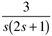
Find the output as a function of time, for a unit step input change. Sketch the expected behavior. |
| 3: | Use the initial value theorem to find the immediate response of a lead-lag transfer function to a step input change at t = 0.
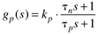
Also, use the final value theorem to find the long-term response of a lead-lag transfer function to a step input change. |
| 4: | For the following second-order process with numerator dynamics, solve for the time-domain output response to a step input change of magnitude Du at t =0.
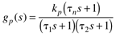
For kp = 1°C/Lpm, t1 = 3 min, t2 = 15 min, tn = 20 min find the peak temperature and the time that it occurs. |
| 5: | Consider an input-output transfer function that mimics two first-order processes in parallel
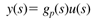
where
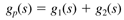
If the gain of g1 is positive and the gain of g2 is negative, find the conditions (relationship between gains and time constants for the two transfer functions) that cause a right-half-plane zero (resulting in inverse response to a step input change) in gp(s). |
| 6: | Consider the state space model
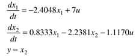
Find the second-order differential equation in y. Hint: first solve for x1 from the second equation, then take the derivative and substitute into the first equation. |
| 7: | Consider the following state-space model
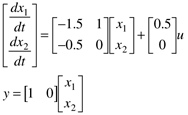
Which has the following input-output transfer function relationship
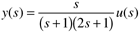
For a unit step change in the input, u(s) = 1/s:
Find the output at t=0 and as t approaches infinity, using the initial and final value theorems. Find the time domain solution, y(t) Sketch the time domain behavior of y(t) Are your results for i, ii, and iii consistent?
|
| 8: | As a process engineer with the Complex Pole Corporation, you are assigned a unit with an exothermic chemical reactor. In order to learn more about the dynamics of the process, you decide to make a step change in the input variable, the coolant temperature, from 10°C to 15°C. Assume that the reactor was initially at a steady state. You obtain the following plot for the output variable, which is reactor temperature (notice that the reactor temperature is in °F). Use Figure 3-9 to help answer the following questions.
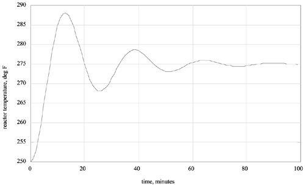
What is the value of the process gain? (show units) What is the value of t? (show units) What is the value of z? (show units) What is the decay ratio? What is the period of oscillation? (show units) Write the second-order transfer function. Hint:
Use Figure 3-9 to assist you.
|
| 9: | Match the transfer functions with the responses to a unit step input, shown in the figure.
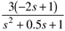 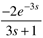 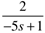 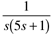 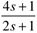
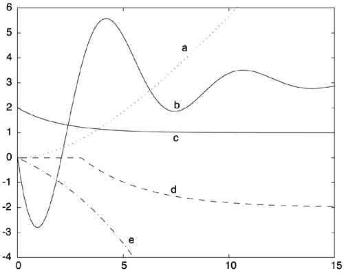 |
| 10: | Consider the following state space model:
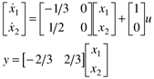
Find the transfer function model. Find (analytically) the time-domain output response to a unit step input change. Sketch the expected response to a unit step input change.
|
| 11: | As a process engineer, you decide to develop a first-order + time delay model of a process using a step test. The process is initially at steady state, with an input flow rate of 5 gpm and an output of 0.75 mol/L. You make a step increase of 0.5 gpm at 3:00 p.m. and do not observe any changes until 3:07 p.m. At 3:20 p.m., the value of the output is 0.8 mol/L. You become distracted and do not have a chance to look at the output variable again, until you leave for happy hour at a local watering hole at 6:30 p.m. You note that the output has ceased to change and has achieved a new steady-state value of 0.85 mol/L. What are the values of the process parameters, with units? Show your work. |
| 12: | Use the initial and final value theorems of Laplace transforms to determine the initial and final values of the process output for a unit step input change to the following transfer functions.
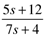 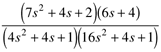 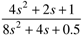
|
| 13: | Consider the following state space model for a biochemical reactor. Since there are two states (the A matrix is 2 x 2) we expect that the process transfer function will be second-order. Show that pole-zero cancellation occurs, resulting in a first-order transfer function. Find the values of the gain and time constant.
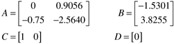
|
| 14: | Match the transfer functions with the responses to a unit step input, shown in the figure.
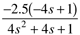 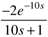 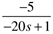 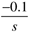 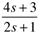
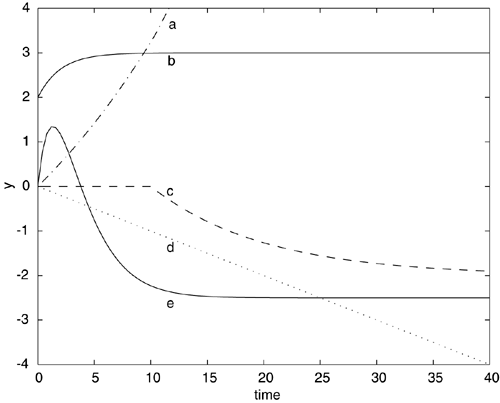
|
| 15: | Consider Example 3.4. For an impulse input of 30 kJ, find the value of the vessel temperature immediately after the impulse input is applied. |
| 16: | Consider the following second-order transfer function
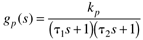
For a unit impulse input, find the output response as a function of time. What is the peak change and when does it occur? |